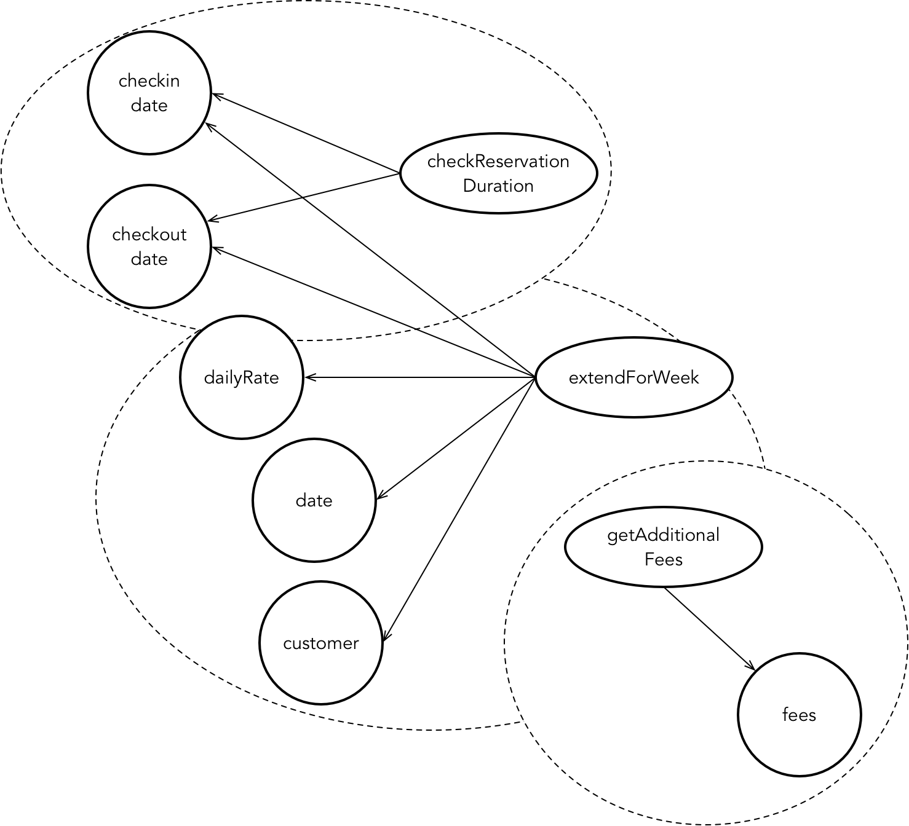

- 001 「战略篇」访谈 DDD 和微服务是什么关系？.md.html
- 002 「战略篇」开篇词：领域驱动设计，重焕青春的设计经典.md.html
- 003 领域驱动设计概览.md.html
- 004 深入分析软件的复杂度.md.html
- 005 控制软件复杂度的原则.md.html
- 006 领域驱动设计对软件复杂度的应对（上）.md.html
- 007 领域驱动设计对软件复杂度的应对（下）.md.html
- 008 软件开发团队的沟通与协作.md.html
- 009 运用领域场景分析提炼领域知识（上）.md.html
- 010 运用领域场景分析提炼领域知识（下）.md.html
- 011 建立统一语言.md.html
- 012 理解限界上下文.md.html
- 013 限界上下文的控制力（上）.md.html
- 014 限界上下文的控制力（下）.md.html
- 015 识别限界上下文（上）.md.html
- 016 识别限界上下文（下）.md.html
- 017 理解上下文映射.md.html
- 018 上下文映射的团队协作模式.md.html
- 019 上下文映射的通信集成模式.md.html
- 020 辨别限界上下文的协作关系（上）.md.html
- 021 辨别限界上下文的协作关系（下）.md.html
- 022 认识分层架构.md.html
- 023 分层架构的演化.md.html
- 024 领域驱动架构的演进.md.html
- 025 案例 层次的职责与协作关系（图文篇）.md.html
- 026 限界上下文与架构.md.html
- 027 限界上下文对架构的影响.md.html
- 028 领域驱动设计的代码模型.md.html
- 029 代码模型的架构决策.md.html
- 030 实践 先启阶段的需求分析.md.html
- 031 实践 先启阶段的领域场景分析（上）.md.html
- 032 实践 先启阶段的领域场景分析（下）.md.html
- 033 实践 识别限界上下文.md.html
- 034 实践 确定限界上下文的协作关系.md.html
- 035 实践 EAS 的整体架构.md.html
- 036 「战术篇」访谈：DDD 能帮开发团队提高设计水平吗？.md.html
- 037 「战术篇」开篇词：领域驱动设计的不确定性.md.html
- 038 什么是模型.md.html
- 039 数据分析模型.md.html
- 040 数据设计模型.md.html
- 041 数据模型与对象模型.md.html
- 042 数据实现模型.md.html
- 043 案例 培训管理系统.md.html
- 044 服务资源模型.md.html
- 045 服务行为模型.md.html
- 046 服务设计模型.md.html
- 047 领域模型驱动设计.md.html
- 048 领域实现模型.md.html
- 049 理解领域模型.md.html
- 050 领域模型与结构范式.md.html
- 051 领域模型与对象范式（上）.md.html
- 052 领域模型与对象范式（中）.md.html
- 053 领域模型与对象范式（下）.md.html
- 054 领域模型与函数范式.md.html
- 055 领域驱动分层架构与对象模型.md.html
- 056 统一语言与领域分析模型.md.html
- 057 精炼领域分析模型.md.html
- 058 彩色 UML 与彩色建模.md.html
- 059 四色建模法.md.html
- 060 案例 订单核心流程的四色建模.md.html
- 061 事件风暴与业务全景探索.md.html
- 062 事件风暴与领域分析建模.md.html
- 063 案例 订单核心流程的事件风暴.md.html
- 064 表达领域设计模型.md.html
- 065 实体.md.html
- 066 值对象.md.html
- 067 对象图与聚合.md.html
- 068 聚合设计原则.md.html
- 069 聚合之间的关系.md.html
- 070 聚合的设计过程.md.html
- 071 案例 培训领域模型的聚合设计.md.html
- 072 领域模型对象的生命周期-工厂.md.html
- 073 领域模型对象的生命周期-资源库.md.html
- 074 领域服务.md.html
- 075 案例 领域设计模型的价值.md.html
- 076 应用服务.md.html
- 077 场景的设计驱动力.md.html
- 078 案例 薪资管理系统的场景驱动设计.md.html
- 079 场景驱动设计与 DCI 模式.md.html
- 080 领域事件.md.html
- 081 发布者—订阅者模式.md.html
- 082 事件溯源模式.md.html
- 083 测试优先的领域实现建模.md.html
- 084 深入理解简单设计.md.html
- 085 案例 薪资管理系统的测试驱动开发（上）.md.html
- 086 案例 薪资管理系统的测试驱动开发（下）.md.html
- 087 对象关系映射（上）.md.html
- 088 对象关系映射（下）.md.html
- 089 领域模型与数据模型.md.html
- 090 领域驱动设计对持久化的影响.md.html
- 091 领域驱动设计体系.md.html
- 092 子领域与限界上下文.md.html
- 093 限界上下文的边界与协作.md.html
- 094 限界上下文之间的分布式通信.md.html
- 095 命令查询职责分离.md.html
- 096 分布式柔性事务.md.html
- 097 设计概念的统一语言.md.html
- 098 模型对象.md.html
- 099 领域驱动设计参考过程模型.md.html
- 100 领域驱动设计的精髓.md.html
- 101 实践 员工上下文的领域建模.md.html
- 102 实践 考勤上下文的领域建模.md.html
- 103 实践 项目上下文的领域建模.md.html
- 104 实践 培训上下文的业务需求.md.html
- 105 实践 培训上下文的领域分析建模.md.html
- 106 实践 培训上下文的领域设计建模.md.html
- 107 实践 培训上下文的领域实现建模.md.html
- 108 实践 EAS 系统的代码模型.md.html
- 109 后记：如何学习领域驱动设计.md.html
066 值对象
值对象通常作为实体的属性而存在，也就是亚里士多德提到的数量、性质、关系、地点、时间与形态等范畴。正如 Eric Evans 所说：“当你只关心某个对象的属性时，该对象便可做为一个值对象。为其添加有意义的属性，并赋予它相应的行为。我们需要将值对象看成不变对象，不要给它任何身份标识，还有要尽量避免像实体对象一样的复杂性。”
在进行领域驱动设计时，我们应该优先考虑使用值对象来建模而不是实体对象。因为值对象没有唯一标识，于是我们卸下了管理身份标识的负担；因为值对象是不变的，所以它是线程安全的，不用考虑并发访问带来的问题。值对象比实体更容易维护，更容易测试，更容易优化，也更容易使用，因此在建模时，值对象才是我们的第一选择。
值对象与实体的本质区别
当我们无法分辨表达一个领域概念该用实体还是值对象时，就可以问一下自己：你是用对象的属性值判等，还是用对象的身份标识来判等？ 例如，在销售系统中，一个客户（Customer）可以有多个联系人（Contact），它们应该被定义成实体还是值对象？从判等的角度看，当两个客户的属性值都相等时，可以认为他（她）们是同一个客户吗？从领域合规性来看，显然不能，至少这种判等方式可能存在偏差。从业务逻辑看，我们往往更关注不同客户的身份标识，以此来确定他（她）是否我们的客户！对于联系人而言，当一个客户提供了多个联系人信息时，就可以仅通过联系信息如电话号码来判别是否同一个联系人。因此，客户是实体，联系人是值对象。
在针对不同领域、不同限界上下文进行领域建模时，注意不要被看似相同的领域概念误导，以为概念相同就要遵循相同的设计。任何设计都不能脱离具体业务的上下文。例如钞票 Money，在多数领域中，我们都只需要关心它的面值与货币单位。如果都是人民币，面值都为 100，则此 100 元与彼 100 元并没有任何实质上的区别，可以认为其值相等，定义为值对象类型。然而，在印钞厂的生产领域，管理者关心的就不仅仅是每张钞票的面值和货币单位，而是要区分每张钞票的具体身份，即印在钞票上的唯一标识。此时，钞票 Money 就应该被定义为实体类型。
总而言之，是否拥有唯一的身份标识才是实体与值对象的根本区别。正是因为实体拥有身份标识，才能够让资源库更好地管理和控制它的生命周期；正是因为值对象没有身份标识，我们才不能直接管理值对象，使得它成为了实体的附庸，用以表达主体对象的属性。至于值对象的不变性，则主要是从优化、测试、并发访问等非业务因素去考量的，并非领域设计建模的领域需求。
不变性
若要保证值对象的不变性，不同的开发语言有着不同的实践。例如 Scala 语言，可以用 val 来声明该变量是不可变更的，可以使用不变集合来维持容器的不变性，同时，还引入了 Case Class 这样的语法糖，通过它定义的类本身就是不变的值对象。Java 语言提供了 @Immutable 注解来说明不变性，但该注解自身并不具备不变性约束。《Java 并发编程实践》给出了不变对象必须满足的几个条件：
- 对象创建以后其状态就不能修改。
- 对象的所有字段都是 final 类型。
- 对象是正确创建的（创建期间没有 this 引用逸出）。
例如，如下 Money 值对象的定义就保证了它的不变性：
@Immutable
public final class Money {
private final double faceValue;
private final Currency currency;
public Money() {
this(0d, Currency.RMB)
}
public Money(double value, Currency currency) {
this.faceValue = value;
this.currency = currency;
}
public Money add(Money toAdd) {
if (!currency.equals(toAdd.getCurrency())) {
throw new NonMatchingCurrencyException("You cannot add money with different currencies.");
}
return new Money(faceValue + toAdd.getFaceValue(), currency);
}
public Money minus(Money toMinus) {
if (!currency.equals(toMinus.getCurrency())) {
throw new NonMatchingCurrencyException("You cannot remove money with different currencies.");
}
return new Money(faceValue - toMinus.getFaceValue(), currency);
}
}
在 Money 值对象的定义中，faceValue 与 currency 字段均被声明为 final 字段，并由构造函数对其进行初始化。faceValue 字段的类型为不变的 double 类型，currency 字段为不变的枚举类型。add() 与 minus() 方法并没有直接修改当前对象的值，而是返回了一个新的 Money 对象。显然，既要保证对象的不变性，又要满足更新状态的需求，就需要通过一个保存了新状态的实例来“替换”原有的不可变对象。这种方式看起来会导致大量对象被创建，从而占用不必要的内存空间，影响程序的性能。但事实上，由于值对象往往比较小，内存分配的开销并没有想象的大。由于不可变对象本身是线程安全的，无需加锁或者提供保护性副本，使得它在并发编程中反而具有性能优势。
领域行为
值对象与实体对象的领域行为并无本质区别。Eric Evans 之所以将其命名为”值对象（Value Object）”，是因为我们在理解领域概念时，关注的重点在于值。例如，我们在谈论温度时，关心的是多少度，以及单位是摄氏度还是华氏度；我们在谈论钞票时，关心的是面值，以及货币是人民币还是美元。但是，这并不意味着值对象不能拥有领域行为。不仅如此，我们还要依据“合理分配职责”的原则，力求将实体对象的领域行为按照关联程度的强弱分配给对应的值对象。这实际上也是面向对象“分治”思想的体现。
在讲解实体时，我提到需要“实体专注于身份”的设计原则。分配给实体的领域逻辑，应该是符合它身份的领域行为。身份是什么？就是实体作为主体对象具有自己的身份特征，属于实体的主要属性值。例如，一个酒店预订（Reservation）实体，它的身份与预订有关，就应该包含预订时间、预订周期、预订房型与客户等属性。现在有一个领域行为，需要检查预订周期是否满足预订规则，该规则为：
- 确保预订的入住日期位于离店日期之前
- 确保预订周期满足三晚的最短时间
如果将该领域行为分配给 Reservation 实体：
public class Reservation {
private LocalDateTime reservationTime;
private LocalDate checkInDate;
private LocalDate checkOutDate;
private RoomType roomType;
public void checkReservationDuration() {
if (checkInDate.isAfter(checkOutDate)) {
throw new ReservationDurationException("Check in date cannot be after check out date.");
}
if (doesNotMeetMinimumDuration(checkInDate, checkOutDate)) {
throw new ReservationDurationException("Stay does not meet minimum duration");
}
}
private boolean doesNotMeetMinimumDuration(LocalDate checkInDate, LocalDate checkOutDate) {
return checkInDate.until(checkOutDate, DAYS) < 3;
}
}
checkReservationDuration() 方法专注于 Reservation 实体的身份了吗？显然没有，它操作的并非一次预订，而是一段预订周期。预订周期是一个高内聚的细粒度领域概念，因为它既离不开 checkInDate，也离不开 checkOutDate，只有两个属性都具备时，预订周期这个概念才完整。这是一个值对象。一旦封装为值对象类型，则检查预订周期的领域行为也应该“推”向它：
public class ReservationDuration {
private LocalDate checkInDate;
private LocalDate checkOutDate;
public ReservationDuration(LocalDate checkInDate, LocalDate checkOutDate) {
if (checkInDate.isAfter(checkOutDate)) {
throw new ReservationDurationException("Check in date cannot be after check out date.");
}
if (doesNotMeetMinimumDuration(checkInDate,checkOutDate)) {
throw new ReservationDurationException("Stay does not meet minimum duration");
}
this.checkInDate = checkInDate;
this.checkOutDate = checkOutDate;
}
private boolean doesNotMeetMinimumDuration(LocalDate checkInDate, LocalDate checkOutDate) {
return checkInDate.until(checkOutDate, DAYS) < 3;
}
}
倘若审视方法与属性之间的关系，也可瞧出个中端倪。若一个方法仅仅操作了该实体的部分属性，则说明该方法与整个实体的关系要弱于与这部分属性之间的关系，如 checkReservationDuration() 方法与 Reservation 实体之间的关系，就要弱于它与 checkInDate 和 checkOutDate 之间的关系。这就需要依据关系强弱的差异对类的成员进行剥离。在《修改代码的艺术》一书中，Michael C. Feathers 将这种方式总结为职责识别的探索式方法——寻找内部关系。他还提出了通过绘制特征草图（Feature Sketch）的方法来描绘类内部的关系，从而判断类的职责分配是否合理。
在设计实体时，我们亦可采用特征草图来帮助我们寻找在领域分析建模阶段未曾识别出来的细粒度的领域概念，然后将其定义为值对象。参考《修改代码的艺术》书中的案例，假设 Reservation 类除了定义了 checkReservationDuration() 方法之外，还包括 extendForWeek() 与 getAdditionalFee() 方法，这些方法与类属性的特征草图如下所示：

特征草图非常清晰地表达了方法与属性之间关系的归类，沿着上图所示的边界对实体类进行拆分，然后通过这种高内聚关系抽象出领域概念，由此定义对应的类。如此，职责的分配就能变得更加合理，从而提高领域设计模型的质量。
值对象定义的方法往往是所谓的“自给自足的领域行为”，这些领域行为能够让值对象的表现能力变得更加丰富，更加智能。这些自给自足的领域行为通常包括但不限于如下职责：
- 自我验证
- 自我组合
- 自我运算
自我验证
如果作为实体属性的值对象自身不具备验证非法数据的能力，就可能导致在实体类中充斥着大量的验证代码。这些验证代码并非主要的领域逻辑，却干扰了实体类的主要领域逻辑。既然是为了验证实体的属性值，就应该将这些属性封装为值对象，然后将验证逻辑推给值对象，形成对值的自我验证。
所谓验证，实际上就是验证设置给值对象的外部数据是否合法。如果值对象的属性值与其生命周期有关，就要求创建该值对象时不允许持有非法数据，因此，验证逻辑属于值对象构造函数的一部分。一旦该值不合法，就应该抛出表达业务含义的自定义异常。一些验证逻辑甚至包含了业务规则，例如前面定义的 ReservationDuration 就约束了预定周期不能少于 3 天。
如果验证逻辑相对比较复杂，则可以定义一个私有方法，如 validate() 方法。构造函数通过调用该私有方法来确保构造函数的简单。例如，针对 Order 实体，我们定义了 Address 值对象，Address 值对象又嵌套定义了 ZipCode 值对象：
public class ZipCode {
private final String zipCode;
public ZipCode(String zipCode) {
validate(zipCode);
this.zipCode = zipCode;
}
public String value() {
return this.zipCode;
}
private void validate(String zipCode) {
if (Strings.isNullOrEmpty(zipCode)) {
throw new InvalidZipCodeException();
}
if (!isValid(zipCode)) {
throw new InvalidZipCodeException();
}
}
private boolean isValid(String zipCode) {
String reg = "[1-9]\\d{5}";
return Pattern.matches(reg, zipCode);
}
}
public class Address {
private final String province;
private final String city;
private final String street;
private final ZipCode zip;
public Address(String province, String city, String street, ZipCode zip) {
validate(province);
validate(city);
validate(street);
this.province = province;
this.city = city;
this.street = street;
this.zip = zip;
}
}
自我验证方法保证了值对象的正确性。如果我们能够根据业务需求将每个组成实体属性的值对象都定义为具有自我验证能力的类，就可以使得组成程序的基本单元变得更加健壮，间接就会提高整个软件系统的健壮性。我们还应该为这些验证逻辑编写单元测试，确保这些实现不会因为代码的修改遭到破坏。当然，这些验证逻辑主要针对外部传入的设置值进行验证。倘若验证功能还需要求助于外部资源进行合法验证，例如验证 name 是否已经存在，就需要查询数据库，则这样的验证逻辑就不再是“自给自足”的，不能再由值对象承担。
自我组合
值对象往往用于表达数量，这就会牵涉到数据值的运算。由于值对象并非定义了运算符的基本类型，为了方便运算，就需要为其定义运算方法，以支持对多个相同类型值对象的组合运算。这种领域行为称之为“自我组合”。例如前面定义的 Money 值对象，它定义的 add() 与 minus() 方法就是针对 Money 类型进行自我组合。
引入组合方法既可以保证值对象的不变性，避免组合操作直接对状态进行修改，又是对组合逻辑的封装与验证，避免引入与错误对象的组合。例如 Money 值对象的 add() 与 minus() 方法验证了不同货币的错误场景，避免了将两种不同货币的 Money 直接进行计算。注意，Money 类的 add() 和 minus() 方法并没有妄求对货币进行汇率换算。这是因为汇率是不断变化的，要换算货币，需要求助于外部的汇率服务获得当前汇率。我们要求值对象拥有的领域行为是“自给自足”的，无需依赖任何外部资源，这样设计的值对象也更容易编写单元测试。
值对象在表达数量时，还可能牵涉到数量的单位。与货币不同，不同单位之间的换算依据固定的转换比例。例如，长度单位中的毫米、分米、米与千米之间的比例都是固定的。长度与长度单位皆为值对象，分别定义为 Length 与 LengthUnit。Length 具有自我组合的能力，支持长度值的四则运算。如果参与运算的长度值单位不同，就需要进行换算。长度计算与单位换算是两个不同的职责。依据“信息专家模式”，由于 LengthUnit 类才具有换算比例的值，因此就应该由它承担单位换算的职责：
public enum LengthUnit {
MM(1), CM(10), DM(100), M(1000);
private int ratio;
Unit(int ratio) {
this.ratio = ratio;
}
int convert(Unit target, int value) {
return value * ratio / target.ratio;
}
}
注意，LengthUnit 类并没有定义 getRatio() 方法，因为该数据并不需要提供给外部调用者。当 Length 在进行长度计算时，如果需要换算单位，可以调用 LengthUnit 的 convert() 方法，而不是获得换算比例值。这才是正确的行为协作模式：
public class Length {
private int value;
private LengthUnit unit;
public Length() {
this(0, LengthUnit.MM)
}
public Length(int value, LengthUnit unit) {
this.value = value;
this.unit = unit;
}
public Length add(Length toAdd) {
int convertedValue = toAdd.unit.convert(this.unit, toAdd.value);
return new Length(convertedValue + this.value, this.unit);
}
}
LengthUnit 值对象被定义为了 Java 的枚举。在 Java 语言中，由于枚举具有堪比类类型的丰富特性，且它天生具备不变性，在语义上亦属于对类别的划分，故而与值对象的特征非常契合。因此，可以优先考虑用 Java 枚举来定义值对象。C# 语言的枚举类型本质上是一个整型，表达能力不够丰富，但它提供的结构（struct）类型一方面具有类的特征，同时又是线程安全的值类型，适合用来定义值对象。
自我运算
自我运算是根据业务规则对内部属性的一种运算行为。例如，Location 值对象拥有 longitude 与 latitude 属性值，只需要再提供另一个地理位置的经度与纬度，就可以执行计算，获得两个地理位置之间的直线距离：
@Immutable
public final class Location {
private final double longitude;
private final double latitude;
public Location(double longitude, double latitude) {
this.longitude = longitude;
this.latitude = latitude;
}
public double getLongitude() {
return this.longitude;
}
public double getLatitude() {
return this.latitude;
}
public double distanceOf(Location location) {
double radiansOfStartLongitude = radians(this.longitude());
double radiansOfStartDimension = radians(this.latitude());
double radiansOfEndLongitude = radians(location.getLongitude());
double raidansOfEndDimension = radians(location.getLatitude());
return Math.acos(
Math.sin(radiansOfStartLongitude) * Math.sin(radiansOfEndLongitude) +
Math.cos(radiansOfStartLongitude) * Math.cos(radiansOfEndLongitude) * Math.cos(raidansOfEndLatitude - radiansOfStartLatitude)
);
}
}
当 Location 值对象拥有了计算距离的领域行为之后，这个对象也就变成了智能对象。第 1-8 课《服务行为模型》定义了一个查询最近餐厅的服务提供者，如果改用如上定义的 Location 类，代码就变得更加简单，职责的分配也更加合理：
public class NeareastRestaurentService implements RestaurantService {
private static long RADIUS = 3000;
@Override
public Restaurant requireNeareastRestaurant(Location location) {
List<Restaurant> restaurants = requireAllRestaurants(location, RADIUS);
Collections.sort(restaurants, new LocationComparator(location));
return restaurants.get(0);
}
private final class LocationComparator implements Comparator<Location> {
private Location currentLocation;
public LocationComparator(Location currentLocation) {
this.currentLocation = currentLocation;
}
@Override
public int compare(Location l1, Location l2) {
return l1.distanceOf(currentLocation).compareTo(l2.distanceOf(currentLocation));
}
}
}
值对象与基本类型
综上所述，除了没有唯一身份标识之外，值对象与实体并没有明显差别，都可以定义属性和封装了领域行为的方法。为减少并发访问的负担，根据值对象的特点，约束了它的不变性，使得它的领域行为实现略不同于实体。
在领域设计模型中，实体与值对象作为表达领域概念的主要设计要素，发挥着重要的作用。自给自足兼具丰富行为能力的值对象，会让我们的设计变得更加优雅，对象之间的职责分配变得更加平衡。因而，我们应尽量将那些细粒度的领域概念建模为值对象而非基本类型。相较于基本类型，值对象的优势更加明显：
- 基本类型无法展现领域概念，值对象则不然。例如 String 与 Name，Int 与 Age，显然后者更加直观地体现了业务含义。
- 基本类型无法封装显而易见的领域逻辑，值对象则不然。除了少数语言提供了为基本类型扩展方法的机制，基本类型都是封闭的内建类型。如果属性为基本类型，就无法封装领域行为，只能交给拥有属性的主对象，导致作为主对象的实体变得很臃肿。
- 基本类型缺乏验证能力，值对象则不然。除了类型封装的验证行为，对于强类型语言而言，类型自身也是一种验证。例如，书名与编号分别定义为 Title 与 ISBN 值对象，调用者就不能将书的编号误传给书名，编译器会检查到这种错误。如果这两个属性都定义为 String 类型，编译器就不可能检查到这一错误。
值对象为职责分配提供了良好基础。在真实的项目开发中，一个实体往往包含几十个属性。倘若这些属性都被定义为基本类型，就会导致大量业务逻辑涌入到一个实体对象中，这既违背了单一职责原则，也不利于领域逻辑的重用。引入值对象就可以分担这些职责，更好地保证实体的简单与纯粹。这样的设计也更有利于对代码进行单元测试。